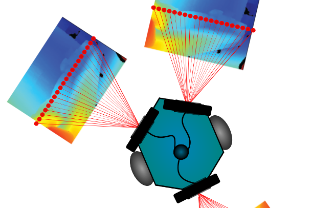
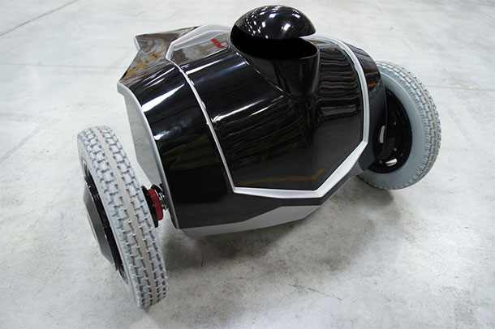
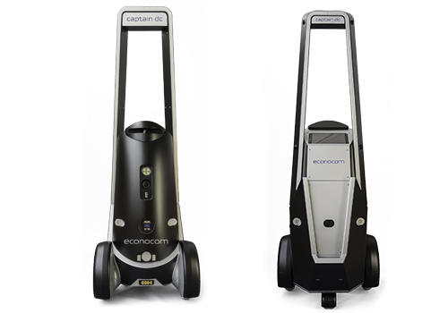

Bienvenue !
Voici mon CV numérique ! J'aggrémente cette page au fur et à mesure de mes expériences professionnelles.
Je suis passionné par la robotique, la programation et le développement continu, comme le démontre cette page :)
Télécharger mon CV
Mise à jour : 29 décembre 2016
Compétences
| Code | C++ Python Java Javascript | |||||||||||||||
|---|---|---|---|---|---|---|---|---|---|---|---|---|---|---|---|---|
| Systèmes | Linux (Ubuntu, ArchLinux), Windows
|
|||||||||||||||
| Domaines d'expertises |
|
|||||||||||||||
| Outils |
|
Formation
| 2008 - Manager des systèmes d'information, eXia, Bac+5, Niveau I |
|---|
| 2007 - Responsable en ingénierie logiciels, eXia, Bac+4, Niveau II |
| 2001 - BTS Informatique de Gestion, Bac+2, Niveau III |
Expériences professionelles
| Octobre 2014 - Ingénieur EOS Innovation |
|---|
| Avril 2013 - Ingénieur ENSTA |
| Octobre 2012/Mars 2013 - Ingénieur ALDEBARAN-ROBOTICS |
| Juillet 2012 - Ingénieur INRIA |
Projets professionnels
-

POPULI
ROS/C++/Python 2014 ENSTADéveloppement d'un module de navigation en utilisant des capteurs de vision et de profondeur à bas coût. Notre approche consiste à : une phase d'exploration permettant de recueillir les informations nécessaires pour réaliser une cartographie métrique et visuelle et une seconde phase de navigation utilisant la carte pour réaliser la localisation métrique et la relocalisation en cas de perte ou lors de l'initialisation.
-

e-vigilante
ROS / C++ / Python 2015 EOS Innovation
e-vigilante est un robot destiné à la surveillance intérieure des entrepôts et sites industriels. Il réduit les coûts et les risques liés aux aléas de la sécurité tout en optimisant la surveillance à l'intérieur des sites surveillés. Mobile, autonome et polyvalent, il effectue des rondes automatisées et prévient immédiatement la personne en charge de la surveillance du site lors de la détection d'un incident.
-

evolve
ROS / C++ / Python 2016 EOS Innovation
Captain DC (evolve) remonte continuellement les alertes du datacenter, permet un diagnostic à distance des problèmes techniques rencontrés et accompagne les experts dans leurs actions de maintenance quotidienne. Avec l’ensemble de ses relevés, il permet d’offrir des services de cartographies et d’urbanisation du datacenter.
Rapport d'activité INRIA :
2011 | 2010 | 2009 | 2008
-

Flowers Fields
URBI / C++ 2010 INRIA
Flowers Fields est une installation robotique composée de bras lampe articulés.
La photo ci-dessus est le second prototype de cette installation. Basé sur des moteurs Bioloid RX-28. Nous avons présenté ce robot à INNOROBOT, à Lyon en 2011.
Ces prototypes ont été créée afin d'explorer de nouvelles formes de robots personnelles qui pourraient, pourquoi pas, faire parti de nos vies au quotidien.
-

Ergo-Robot
URBI / Python / C++ 2011 INRIADans un grand œuf à peine ouvert, une tribu de jeunes créatures robotiques se développe et explore son environnement. Au delà de leurs capacités innées, elles sont équipées de mécanismes leur permettant de découvrir des savoir-faire nouveaux et d’inventer leur propre langue. Dotées de curiosité artificielle, elles explorent les objets qui sont autour d’elles, ainsi que les effets que leurs vocalisations produisent sur les humains. En réagissant avec des gestes, les humains créent une boucle d’interaction, et une forme nouvelle de communication entre ergo-robots et humains s’auto-organise au cours du temps.
-

IHM
URBI / Python / C++ 2009 INRIAAu sein de l'équipe FLOWERS, j'ai dévéloppé de nombres interfaces permettant d'intéragir avec des robots. Notamment la wiimote, un laser, des caméras de toutes sortes.
A l'aide de ces développements nous avons réalisé des expériences robotique, en demandant à quelques personnes de tester nos interfaces afin d'évaluer celles-ci.
-

APRAM
C++ / GTK 2008 LORIAImplémentation d’un mécanisme d’ap- prentissage sur un robot pour lui permettre, de façon autonome, de se diriger vers une cible. Pour atteindre cet objectif on appliquera deux phases : l’apprentissage tutoré et l’apprentissage libre. Durant la phase d’apprentissage tutoré, un utilisateur indiquera les mouvements adéquats au robot. Durant cette première phase d’apprentissage le robot doit être capable d’évaluer sa position par rapport à la cible afin d’être en mesure d’exploiter ces données. Durant la seconde phase, l’apprentissage libre, le robot doit être en mesure de localiser la cible à l’aide de sa caméra puis de choisir le mouvement approprié pour s’approcher de cette cible.
-

OBS & NS2
C++ / OTcl / Tcl 2007 UQAMEn 2007, j'ai réalisé un stage à l'UQAM à Montréal. Le stage consistait à mettre à jour le simulateur de réseau NS2 afin de prendre en compte les spécificités des réseaux optiques de type Optical Burst Switching.
La seconde partie du stage consistait à réaliser un éditeur de topologie réseau pour le simulateur de réseau NS2. J'ai choisi d'utiliser java et, à l'aide d'outils graphiques, je générais le fichier d'entré pour le simulateur. -

CLX / ADX / DLX
C++ / C / VB / PHP 2005 FICHET-BAUCHELors de ma première expérience professionnelle, j'ai conçu au sein d'un bureau d'étude plusieurs automates bancaires. J'ai travaillé pour de nombreuses banques. Le CLX est un automate de retrait, il est doté de case, et d'une porte de maintenance (permettant de charger les cases). Il était possible de paramétrer la consigne pour permettre aux clients de venir récupérer des documents ou de l'argent, à l'aide de carte. J'ai également travaillé sur deux automates de dépôt, le DLX et l'ADX. Pour le second, j'ai réalisé entierement le logiciel (de la spécification, au développement, tests et développement des outils de maintenance).